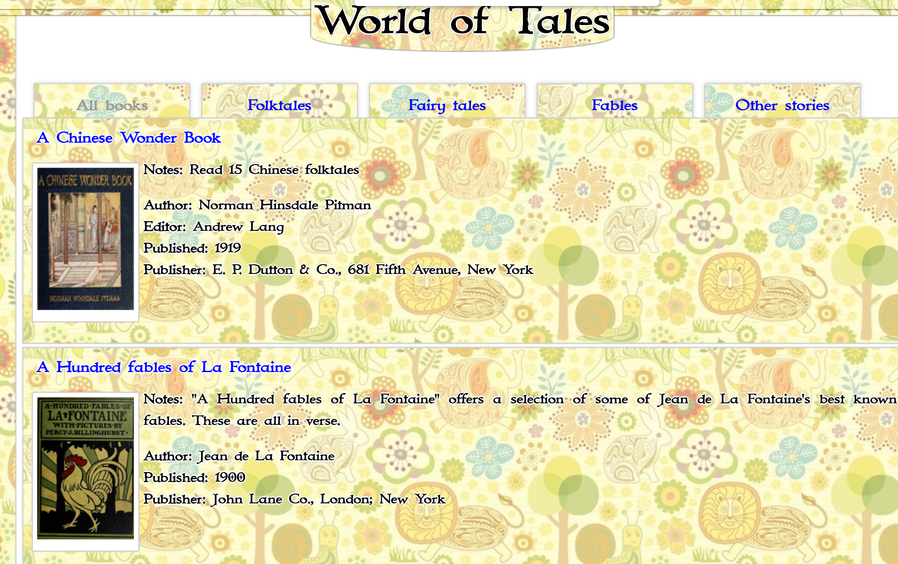

World of Tales Online Story Collection
Contents
World of Tales Online Story Collection#
The World of Tales website, published by Viktor Andonov, contains a wide range of tales extracted from a large number of out of copyright stroy collections.
The majority of the content is in the public domain.
A data download of the stories does not appear to be available: so let’s make one…
Identify Books Available#
The book collections are organised geographically, with geogprahpical regions listed in a sidebar on the website homepage. However, a full list of books is also available on a single page, with a regular structure describing each book.

# These packages make it easy to download web pages so that we can work with them
import requests
# "Cacheing" pages mans grabbing a local copy of the page so we only need to download it once
import requests_cache
from datetime import timedelta
requests_cache.install_cache('web_cache',
backend='sqlite',
expire_after=timedelta(days=1000))
We’ll be adding things to a database…
from sqlite_utils import Database
db_name = "word_of_tales.db"
# Uncomment the following lines to connect to a pre-existing database
#db = Database(db_name)
books_index_url = "https://www.worldoftales.com/all_books.html"
# And then grab the page
html = requests.get(books_index_url)
Each book description is contained in an HTML div element with class box2 GM books:
# The BeautifulSoup package provides a range of tools
# that help us work with the downloaded web page,
# such as extracting particular elements from it
from bs4 import BeautifulSoup
# The "soup" is a parsed and structured form of the page we downloaded
soup = BeautifulSoup(html.content, "html.parser")
# We can use browser developer tools to grab a CSS selector
# for the books list, then extend it to pull just the links
class_ = "box2"
# Find the span elements containing the links
# The first item is just a header
items_ = soup.find_all(class_=class_)[1:]
len(items_)
73
The structure inside each record appears to be consistent, although some records have more fields than others.
Let’s see what a sample record looks like:
items_[0]
<div align="justify" class="box2 GM books" style="margin-top:50px;">
<h2 class="GL"><a href="Chinese_wonder_book.html">A Chinese Wonder Book</a></h2>
<span class="pic"><a href="Chinese_wonder_book.html"><img alt="Chinese folktales" border="0" height="165" src="media/Chinese_folktales.jpg" width="112"/></a></span>
<p><strong>Notes</strong>: Read 15 Chinese folktales </p>
<p><strong>Author</strong>: Norman Hinsdale Pitman <br/>
<strong>Editor</strong>: Andrew Lang <br/>
<strong>Published</strong>: 1919<br/>
<strong>Publisher</strong>: E. P. Dutton & Co., 681 Fifth Avenue, New York</p>
<br/>
</div>
Okay, so there is a mixture of paragrap and <br/> separated elements. Let’s treat things as lines. One of the easiest ways to do that is to view the record in a simple text form by casting the HTML to markdown.
from markdownify import markdownify
# We can convert the soup element to html text
# by casting it as a string
record_txt = markdownify(str(items_[0])).strip()
record_txt
'[A Chinese Wonder Book](Chinese_wonder_book.html)\n-------------------------------------------------\n\n\n[](Chinese_wonder_book.html)\n**Notes**: Read 15 Chinese folktales \n\n\n**Author**: Norman Hinsdale Pitman \n\n**Editor**: Andrew Lang \n\n**Published**: 1919 \n\n**Publisher**: E. P. Dutton & Co., 681 Fifth Avenue, New York'
This gives us a link in the heading, a book cover image, and then a series of metadata fields, each on a new line, with an emboldened header.
Let’s create a parser for that structure.
import re
# We could split on three or more "-" characters
#parts = [p.strip() for p in re.split("---+", record_txt)]
# However, not all the records hav a header defined that way
# (at least one is defined with a leading ###)
# Instead, remove any heading chars then break when we find the linked image
parts = [p.strip().strip() for p in re.split("[-\n\s]+\[", record_txt.lstrip("#").strip())]
parts
['[A Chinese Wonder Book](Chinese_wonder_book.html)',
'](Chinese_wonder_book.html)\n**Notes**: Read 15 Chinese folktales \n\n\n**Author**: Norman Hinsdale Pitman \n\n**Editor**: Andrew Lang \n\n**Published**: 1919 \n\n**Publisher**: E. P. Dutton & Co., 681 Fifth Avenue, New York']
from parse import parse
title_parts = parse("[{title}]({path})", parts[0])
# This gives us the book title and the path to it
(title_parts["title"], title_parts["path"])
('A Chinese Wonder Book', 'Chinese_wonder_book.html')
The next thing we need to do is extract out the image alt text, the image path, the book path, and the metadata lines:
#Remember, we lost the opening [ in the split
body_parts = parse("]({path}){body}", parts[1])
(body_parts["alt"], body_parts["img_path"], body_parts["path"], body_parts["body"])
('Chinese folktales',
'media/Chinese_folktales.jpg',
'Chinese_wonder_book.html',
'\n**Notes**: Read 15 Chinese folktales \n\n\n**Author**: Norman Hinsdale Pitman \n\n**Editor**: Andrew Lang \n\n**Published**: 1919 \n\n**Publisher**: E. P. Dutton & Co., 681 Fifth Avenue, New York')
We could parse the metadata by splitting on the lines (\n+) and then extracting the metadata filed and text, but this may be a little brittle if metadata fields are split over several lines. So instead split on a new header:
metadata_ = [l.strip() for l in re.split("\n\s*\*", body_parts["body"].strip())]
metadata_
['**Notes**: Read 15 Chinese folktales',
'*Author**: Norman Hinsdale Pitman',
'*Editor**: Andrew Lang',
'*Published**: 1919',
'*Publisher**: E. P. Dutton & Co., 681 Fifth Avenue, New York']
And make a dictionary from that:
metadata = {}
for m in metadata_:
m_parts = m.split("**:")
metadata[m_parts[0].strip("*")] = m_parts[1].strip()
metadata
{'Notes': 'Read 15 Chinese folktales',
'Author': 'Norman Hinsdale Pitman',
'Editor': 'Andrew Lang',
'Published': '1919',
'Publisher': 'E. P. Dutton & Co., 681 Fifth Avenue, New York'}
From a quick skim of the book page, at least the following fields appear (there may be others… I’m sure we’ll find them!): Notes, Author, Editor, Translator, Translators, Published, Publisher.
One simplification we might make when generating the metadata keys is to stem the key by removeing any trailing letter s (for example, using .rstrip("s"))
Let’s get all the book metadata:
def get_metadata(book_item):
"""Extract the metadata from each book record."""
record_txt = markdownify(str(book_item)).strip()
# Instead, break when we find the linked image
parts = [p.strip().strip() for p in re.split("[-\n\s]+\[",
record_txt.lstrip("#").strip())]
# Splitting when we find the image
# HACK: in a couple of case, we have text after the link
# For now, dump it and repair the break token...
parts[0] = f'{parts[0].split(")")[0]})'
# In at least one case, we need to strip embolden tags
title_parts = parse("[{title}]({path})", parts[0].strip("*"))
# Remember, we have lost the opening [ in the split...
body_parts = parse("]({path}){body}", parts[1])
metadata_ = [l.strip() for l in re.split("\n\s*\*", body_parts["body"].strip())]
metadata = {}
for m in metadata_:
m_parts = m.split("**:")
# Simplify metadta keys by removing plurals
metadata[m_parts[0].strip("*").rstrip("s")] = m_parts[1].strip()
# Clean the title
title = re.sub(r'[\s\n]+', ' ', title_parts["title"].strip("*"))
record = {"title": title,
"path": title_parts["path"],
"img_alt": body_parts["alt"],
"img_path": body_parts["img_path"],
}
# Use the py3.9 dict merge operator
record = record | metadata
return record
Extract the metadata for all the books:
book_records = []
for item in items_:
book_records.append(get_metadata(item))
book_records[:3]
[{'title': 'A Chinese Wonder Book',
'path': 'Chinese_wonder_book.html',
'img_alt': 'Chinese folktales',
'img_path': 'media/Chinese_folktales.jpg',
'Note': 'Read 15 Chinese folktales',
'Author': 'Norman Hinsdale Pitman',
'Editor': 'Andrew Lang',
'Published': '1919',
'Publisher': 'E. P. Dutton & Co., 681 Fifth Avenue, New York'},
{'title': 'A Hundred fables of La Fontaine',
'path': 'fables/LaFontaine_fables.html',
'img_alt': 'La Fontaine book cover ',
'img_path': 'media/La_Fontaine_book.jpg',
'Note': '"A Hundred fables of La Fontaine" offers a selection of some of Jean de La Fontaine\'s best known fables. These are all in verse.',
'Author': 'Jean de La Fontaine',
'Published': '1900',
'Publisher': 'John Lane Co., London; New York'},
{'title': 'A Treasury of Eskimo Tales',
'path': 'Treasury_Eskimo_Tales.html',
'img_alt': 'A Treasury of Eskimo Tales',
'img_path': 'media/Eskimo_Tales.jpg',
'Note': 'Contains 31 folktales gathered from the Eskimo living in North America.',
'Author': 'Clara Kern Bayliss',
'Published': '1922',
'Publisher': 'Thomas Y. Crowell Company, USA'}]
Get a superset list of all the metadata keys so we can define an appropiate metadata table in the database:
metadata_keys = {k for r in book_records for k in r.keys()}
metadata_keys
{'Author',
'Compiler',
'Editor',
'Note',
'Published',
'Publisher',
'Translator',
'img_alt',
'img_path',
'path',
'title'}
Let’s create a database table to store the metadata:
# Do not run this cell if your database already exists!
# While developing the script, recreate database each time...
db = Database(db_name, recreate=True)
# This schema has been evolved iteratively as I have identified structure
# that can be usefully mined...
db["books_metadata"].create({
"title": str,
"path": str,
"img_path": str,
"img_alt": str,
"Author": str,
"Compiler": str,
"Editor": str,
"Note": str,
"Published": str,
"Publisher": str,
"Translator":str,
}, pk=("title"))
# Enable full text search
# This creates an extra virtual table (books_fts) to support the full text search
db["books_metadata"].enable_fts(["title", "Author", "Translator",
"Compiler", "Editor", "Note", "Publisher"], create_triggers=True)
<Table books_metadata (title, path, img_path, img_alt, Author, Compiler, Editor, Note, Published, Publisher, Translator)>
Now we can add our data to it:
db["books_metadata"].upsert_all(book_records, pk=("title"))
<Table books_metadata (title, path, img_path, img_alt, Author, Compiler, Editor, Note, Published, Publisher, Translator)>
Try a query:
for row in db.query("SELECT * FROM books_metadata LIMIT 3"):
print(row)
{'title': 'A Chinese Wonder Book', 'path': 'Chinese_wonder_book.html', 'img_path': 'media/Chinese_folktales.jpg', 'img_alt': 'Chinese folktales', 'Author': 'Norman Hinsdale Pitman', 'Compiler': None, 'Editor': 'Andrew Lang', 'Note': 'Read 15 Chinese folktales', 'Published': '1919', 'Publisher': 'E. P. Dutton & Co., 681 Fifth Avenue, New York', 'Translator': None}
{'title': 'A Hundred fables of La Fontaine', 'path': 'fables/LaFontaine_fables.html', 'img_path': 'media/La_Fontaine_book.jpg', 'img_alt': 'La Fontaine book cover ', 'Author': 'Jean de La Fontaine', 'Compiler': None, 'Editor': None, 'Note': '"A Hundred fables of La Fontaine" offers a selection of some of Jean de La Fontaine\'s best known fables. These are all in verse.', 'Published': '1900', 'Publisher': 'John Lane Co., London; New York', 'Translator': None}
{'title': 'A Treasury of Eskimo Tales', 'path': 'Treasury_Eskimo_Tales.html', 'img_path': 'media/Eskimo_Tales.jpg', 'img_alt': 'A Treasury of Eskimo Tales', 'Author': 'Clara Kern Bayliss', 'Compiler': None, 'Editor': None, 'Note': 'Contains 31 folktales gathered from the Eskimo living in North America.', 'Published': '1922', 'Publisher': 'Thomas Y. Crowell Company, USA', 'Translator': None}
We can also search for books using free text search over the metadata:
q = "Langmans" # This is a publisher
print(f"Search on: {q}\n")
for story in db["books_metadata"].search(db.quote_fts(q)):
print(story)
Search on: Langmans
{'rowid': 60, 'title': 'The Green Fairy Book', 'path': 'fairy_tales/Andrew_Lang_green_fairy_tale_book.html', 'img_path': 'media/green_fairy_book.jpg', 'img_alt': 'Green fairy book Andrew Lang cover', 'Author': 'Various', 'Compiler': None, 'Editor': 'Andrew Lang', 'Note': "The third book from Andrew Lang's collection was first published in 1892 and contains 42 fairy tales.", 'Published': '1892', 'Publisher': 'Langmans, Green, and Co., London; New York', 'Translator': None}
{'rowid': 66, 'title': 'The Red Fairy Book', 'path': 'fairy_tales/Andrew_Lang_red_fairy_tale_book.html', 'img_path': 'media/red_fairy_book.jpg', 'img_alt': 'Red fairy book Andrew Lang cover', 'Author': 'Various', 'Compiler': None, 'Editor': 'Andrew Lang', 'Note': "The second book from Andrew Lang's collection was first published in 1890 and contains 37 fairy tales.", 'Published': '1890', 'Publisher': 'Langmans, Green, and Co., London; New York', 'Translator': None}
{'rowid': 58, 'title': 'The Blue Fairy Book', 'path': 'fairy_tales/Andrew_Lang_blue_fairy_tale_book.html', 'img_path': 'media/blue_fairy_book.jpg', 'img_alt': 'Blue fairy book Andrew Lang cover', 'Author': 'Various', 'Compiler': None, 'Editor': 'Andrew Lang', 'Note': 'The first of a collection of twelve fairy tale books, gathered by Andrew Lang from various sources. Published in 1889, the Blue Fairy Book contains 37 stories.', 'Published': '1889', 'Publisher': 'Langmans, Green, and Co., London; New York', 'Translator': None}
Scraping Book Index Pages#
The book index pages have links to separate pages for each story.
We need to grab the links to the story pages so we can then scrape each story.
From a quick glance, it looks like links can be found listed in a div element with selector p.GM > a
BASE_URL = "https://www.worldoftales.com/"
# Get an example page
html = requests.get(f'{BASE_URL}/{book_records[0]["path"]}')
soup = BeautifulSoup(html.content, "html.parser")
items_ = [(a.text, a.get('href')) for a in soup.select("p.GM > a")]
items_
[('1.The Golden Beetle or Why the Dog Hates the Cat',
'Asian_folktales/Chinese_Folktale_1.html'),
('2.The Great Bell', 'Asian_folktales/Chinese_Folktale_2.html'),
('3.The Strange Tale of Doctor Dog',
'Asian_folktales/Chinese_Folktale_3.html'),
('4.How Footbinding Started', 'Asian_folktales/Chinese_Folktale_4.html'),
('5.The Talking Fish', 'Asian_folktales/Chinese_Folktale_5.html'),
('6.Bamboo and the Turtle', 'Asian_folktales/Chinese_Folktale_6.html'),
('7.The Mad Goose and the Tiger Forest',
'Asian_folktales/Chinese_Folktale_7.html'),
('8.The Nodding Tiger', 'Asian_folktales/Chinese_Folktale_8.html'),
('9.The Princess Kwan-Yin', 'Asian_folktales/Chinese_Folktale_9.html'),
('10.The Two Jugglers', 'Asian_folktales/Chinese_Folktale_10.html'),
('11.The Phantom Vessel', 'Asian_folktales/Chinese_Folktale_11.html'),
('12.The Wooden Tablet', 'Asian_folktales/Chinese_Folktale_12.html'),
('13.The Golden Nugget', 'Asian_folktales/Chinese_Folktale_13.html'),
('14.The Man Who Would Not Scold',
'Asian_folktales/Chinese_Folktale_14.html'),
('15.Lu-San, Daughter of Heaven', 'Asian_folktales/Chinese_Folktale_15.html')]
Let’s see if we can do that for everything…
storylinks = {}
for book in book_records:
story_links = []
html = requests.get(f'{BASE_URL}/{book["path"]}')
soup = BeautifulSoup(html.content, "html.parser")
book["storylinks"] = [(a.text, a.get('href')) for a in soup.select("p.GM > a")]
print(f'{len(book["storylinks"])} found for {book["title"]}')
15 found for A Chinese Wonder Book
0 found for A Hundred fables of La Fontaine
0 found for A Treasury of Eskimo Tales
0 found for Aesop's fables
0 found for Andersen's fairy tales
32 found for Australian Legendary Tales
0 found for Canadian fairy tales
27 found for Celtic Fairy Tales
8 found for Child-Life in Japan and Japanese Child Stories
11 found for Chinese Folk-lore Tales
0 found for Christmas stories
28 found for Cossack Fairy Tales and Folk Tales
16 found for Czechoslovak Fairy Tales
0 found for Dutch Fairy Tales for Young Folks
0 found for East of the Sun and West of the Moon
0 found for English Fairy Tales
0 found for English Fairy Tales
12 found for Fairies and Folk of Ireland
18 found for Fairy tales from Brazil
0 found for Fairy Tales from the German Forests
21 found for Fairy Tales of the Slav Peasants and Herdsmen
0 found for Folk-lore and Legends: Germany
0 found for Folk-Lore and Legends: Oriental
0 found for Folk-lore and Legends: Scandinavia
34 found for Folk-Lore and Legends: Scotland
1 found for Folk Stories from Southern Nigeria
10 found for Folk Tales from the Russian
0 found for Green willow and other Japanese fairy tales
0 found for Grimm's Fairy Stories
0 found for Grimm's fairy tales
0 found for Hans Andersen's Fairy Tales
0 found for Hans Andersen's Fairy Tales Second Series
0 found for Hindu Tales from the Sanskrit
0 found for Household Stories by the Brothers Grimm
0 found for Household tales by the Brothers Grimm
0 found for Indian fairy tales
8 found for Irish Fairy Tales
0 found for Japanese fairy tales
0 found for Momotaro or Little Peachling
0 found for More English Fairy Tales
20 found for Myths and Folk Tales of Ireland
0 found for Myths And Legends Of Our Own Land Vol. I The Hudson And Its Hills
0 found for Myths And Legends Of Our Own Land Vol. II The isle of Manhattoes and nearby
40 found for Old French fairy tales
0 found for Old Hendrik's Tales
0 found for Old Indian legends
22 found for Old Peter's Russian tales
0 found for Outa Karel's Stories South African Folk-Lore Tales
0 found for Philippine Folk Tales
8 found for Polish Fairy Tales
18 found for Roumanian Fairy Tales
32 found for Stories from Pentamerone
6 found for Stories of King Arthur's Knights
22 found for Tales from the Lands of Nuts and Grapes Spanish and Portuguese Folklore
12 found for Tales of Giants from Brazil
0 found for Tales of the Sun or Folklore of Southern India
17 found for The adventures of Maya the bee
0 found for The Arabian Nights /One Thousand and One Nights/
0 found for The Blue Fairy Book
0 found for The Chinese Fairy Book
0 found for The Green Fairy Book
0 found for The Indian Fairy Book
35 found for The Islands of Magic Legends, Folk and Fairy Tales from the Azores
15 found for The Laughing Prince
0 found for The Magic Bed
0 found for The Oriental Story Book
0 found for The Red Fairy Book
18 found for The Russian Garland
21 found for The Shoemaker's Apron
0 found for The Swedish Fairy Book
0 found for The Tales of Mother Goose
24 found for Welsh Fairy-Tales And Other Stories
0 found for Zanzibar Tales
Okay, so that strategy doesn’t work for quite a lot of the index pages…
What if we just grab all the links, and then use the heuristic that the chapter link text appears to start with a numerical indicator, followed by a ., and then the title (for example, 3., IX.), at least for the pages I looked at…
"/".join(["1"])
'1'
for book in book_records:
# We've cached the pages, so requesting them again is fine...
html = requests.get(f'{BASE_URL}/{book["path"]}')
soup = BeautifulSoup(html.content, "html.parser")
# It seems we have a number, then a . at the start of many pages
story_links = []
for a in soup.select("a"):
if a.text.strip():
# Extract out a number
a_ = a.text.split(".")[0].strip()
# Does it look like a nunmerical index value, howsoever defined
if a_.isdigit() or not [x for x in a_ if x.lower() not in "ivxl"]:
href = a.get('href')
# NOTE: the paths are relative, so we need to fix any
# relative offsets
_path = book["path"].split("/")
if len(_path)>1:
href = f"{'/'.join(_path[:-1])}/{href}"
story_links.append((a_,
".".join(a.text.split(".")[1:]).strip(),
href))
book["storylinks"] = story_links
print(f'{len(book["storylinks"])} found for {book["title"]}')
15 found for A Chinese Wonder Book
20 found for A Hundred fables of La Fontaine
32 found for A Treasury of Eskimo Tales
16 found for Aesop's fables
18 found for Andersen's fairy tales
32 found for Australian Legendary Tales
27 found for Canadian fairy tales
27 found for Celtic Fairy Tales
8 found for Child-Life in Japan and Japanese Child Stories
11 found for Chinese Folk-lore Tales
16 found for Christmas stories
28 found for Cossack Fairy Tales and Folk Tales
16 found for Czechoslovak Fairy Tales
21 found for Dutch Fairy Tales for Young Folks
16 found for East of the Sun and West of the Moon
44 found for English Fairy Tales
41 found for English Fairy Tales
12 found for Fairies and Folk of Ireland
18 found for Fairy tales from Brazil
10 found for Fairy Tales from the German Forests
21 found for Fairy Tales of the Slav Peasants and Herdsmen
0 found for Folk-lore and Legends: Germany
25 found for Folk-Lore and Legends: Oriental
28 found for Folk-lore and Legends: Scandinavia
34 found for Folk-Lore and Legends: Scotland
41 found for Folk Stories from Southern Nigeria
10 found for Folk Tales from the Russian
39 found for Green willow and other Japanese fairy tales
25 found for Grimm's Fairy Stories
62 found for Grimm's fairy tales
21 found for Hans Andersen's Fairy Tales
29 found for Hans Andersen's Fairy Tales Second Series
10 found for Hindu Tales from the Sanskrit
52 found for Household Stories by the Brothers Grimm
211 found for Household tales by the Brothers Grimm
30 found for Indian fairy tales
8 found for Irish Fairy Tales
23 found for Japanese fairy tales
0 found for Momotaro or Little Peachling
45 found for More English Fairy Tales
20 found for Myths and Folk Tales of Ireland
46 found for Myths And Legends Of Our Own Land Vol. I The Hudson And Its Hills
15 found for Myths And Legends Of Our Own Land Vol. II The isle of Manhattoes and nearby
40 found for Old French fairy tales
13 found for Old Hendrik's Tales
14 found for Old Indian legends
22 found for Old Peter's Russian tales
16 found for Outa Karel's Stories South African Folk-Lore Tales
67 found for Philippine Folk Tales
8 found for Polish Fairy Tales
18 found for Roumanian Fairy Tales
32 found for Stories from Pentamerone
6 found for Stories of King Arthur's Knights
22 found for Tales from the Lands of Nuts and Grapes Spanish and Portuguese Folklore
12 found for Tales of Giants from Brazil
35 found for Tales of the Sun or Folklore of Southern India
17 found for The adventures of Maya the bee
35 found for The Arabian Nights /One Thousand and One Nights/
37 found for The Blue Fairy Book
75 found for The Chinese Fairy Book
42 found for The Green Fairy Book
26 found for The Indian Fairy Book
35 found for The Islands of Magic Legends, Folk and Fairy Tales from the Azores
15 found for The Laughing Prince
6 found for The Magic Bed
7 found for The Oriental Story Book
37 found for The Red Fairy Book
18 found for The Russian Garland
21 found for The Shoemaker's Apron
29 found for The Swedish Fairy Book
8 found for The Tales of Mother Goose
23 found for Welsh Fairy-Tales And Other Stories
11 found for Zanzibar Tales
That looks much more interesting with just a couple of exceptions… The Momotaro contains just a single story on the index page, and Folk-lore and Legends: Germany actually points to a list of books that we already have.
Our book records should now be annotated with links to their stories:
book_records[0]
{'title': 'A Chinese Wonder Book',
'path': 'Chinese_wonder_book.html',
'img_alt': 'Chinese folktales',
'img_path': 'media/Chinese_folktales.jpg',
'Note': 'Read 15 Chinese folktales',
'Author': 'Norman Hinsdale Pitman',
'Editor': 'Andrew Lang',
'Published': '1919',
'Publisher': 'E. P. Dutton & Co., 681 Fifth Avenue, New York',
'storylinks': [('1',
'The Golden Beetle or Why the Dog Hates the Cat',
'Asian_folktales/Chinese_Folktale_1.html'),
('2', 'The Great Bell', 'Asian_folktales/Chinese_Folktale_2.html'),
('3',
'The Strange Tale of Doctor Dog',
'Asian_folktales/Chinese_Folktale_3.html'),
('4', 'How Footbinding Started', 'Asian_folktales/Chinese_Folktale_4.html'),
('5', 'The Talking Fish', 'Asian_folktales/Chinese_Folktale_5.html'),
('6', 'Bamboo and the Turtle', 'Asian_folktales/Chinese_Folktale_6.html'),
('7',
'The Mad Goose and the Tiger Forest',
'Asian_folktales/Chinese_Folktale_7.html'),
('8', 'The Nodding Tiger', 'Asian_folktales/Chinese_Folktale_8.html'),
('9', 'The Princess Kwan-Yin', 'Asian_folktales/Chinese_Folktale_9.html'),
('10', 'The Two Jugglers', 'Asian_folktales/Chinese_Folktale_10.html'),
('11', 'The Phantom Vessel', 'Asian_folktales/Chinese_Folktale_11.html'),
('12', 'The Wooden Tablet', 'Asian_folktales/Chinese_Folktale_12.html'),
('13', 'The Golden Nugget', 'Asian_folktales/Chinese_Folktale_13.html'),
('14',
'The Man Who Would Not Scold',
'Asian_folktales/Chinese_Folktale_14.html'),
('15',
'Lu-San, Daughter of Heaven',
'Asian_folktales/Chinese_Folktale_15.html')]}
We could create a simple database table at this point to just how the titles, but let’s wait until we have the story text and then create a more complete table.
Scraping the Story Pages#
The next step is to scrape a story page. Once again, let’s assume there is a regular structure, build a scraper for a single story, selected more or less at random, and then see how far we get…
From a skim of some pages, it looks like we might be in a luck, with the text appearing in a div tag with id=text
# Get an example page
html = requests.get(f'{BASE_URL}/{book_records[0]["storylinks"][0][2]}')
soup = BeautifulSoup(html.content, "html.parser")
markdownify(str(soup.select("#text")))[:100]
'[\nWhat we shall eat to-morrow, I haven\'t the slightest idea!" said Widow Wang to her eldest son, as '
So… are we lucky?
import time
def get_story(link, nice=1):
"""Get story text."""
# Be nice in the scrape
if nice:
time.sleep(nice)
html = requests.get(f'{BASE_URL}/{link[2]}')
soup = BeautifulSoup(html.content, "html.parser")
txt = markdownify(str(soup.select("#text")))
return link[0], link[1], txt
We have a cache set up, so for now it doesn’t matter if we keep requesting pages (the cache will handle repeated requests.) We’ve also added a delay into the page request to try to be nice to the hosting server.
Let’s try to track down books where we don’t appear to be getting stories back:
from tqdm.notebook import tqdm
for book in tqdm(book_records):
# Once the requests cache has been built, we don't need to be nice
# and can set the delay to 0
delay = 0
if book["storylinks"] and len(get_story(book["storylinks"][0], delay)[2]) < 5: # i.e. not may characters
print(f'No story text for: {book["title"]} on {book["path"]} at {book["storylinks"][0]}')
No story text for: A Hundred fables of La Fontaine on fables/LaFontaine_fables.html at ('I', '1.The Grasshopper and the Ant; 2.The Thieves and the Ass; 3.The Wolf Accusing the Fox; 4.The Lion and the Ass Hunting; 5.The Wolf turned Shepherd', 'fables/LaFontaine_fables/LaFontaine_Fables_1.html')
Let’s add that to a database.
First, create a story table:
db["tales"].create({
"title": str,
"path": str,
"book": str,
"text": str,
"chapter": str,
}, pk=("book", "title"))
# Enable full text search
# This creates an extra virtual table (books_fts) to support the full text search
db["tales"].enable_fts(["title", "text"], create_triggers=True)
<Table tales (title, path, book, text, chapter)>
And add all the tales to it…
book_records[1]
{'title': 'A Hundred fables of La Fontaine',
'path': 'fables/LaFontaine_fables.html',
'img_alt': 'La Fontaine book cover ',
'img_path': 'media/La_Fontaine_book.jpg',
'Note': '"A Hundred fables of La Fontaine" offers a selection of some of Jean de La Fontaine\'s best known fables. These are all in verse.',
'Author': 'Jean de La Fontaine',
'Published': '1900',
'Publisher': 'John Lane Co., London; New York',
'storylinks': [('I',
'1.The Grasshopper and the Ant; 2.The Thieves and the Ass; 3.The Wolf Accusing the Fox; 4.The Lion and the Ass Hunting; 5.The Wolf turned Shepherd',
'fables/LaFontaine_fables/LaFontaine_Fables_1.html'),
('II',
'1.The Swan and the Cook; 2.The Weasel in the Granary; 3.The Shepherd and the Sea; 4.The Ass and the Little Dog; 5.The Man and the Wooden God',
'fables/LaFontaine_fables/LaFontaine_Fables_2.html'),
('III',
'1.The Ears of the Hare; 2.The Old Woman and Her Servants; 3.The Ass Carrying Relics; 4.The Hare and the Partridge; 5.The Lion Going to War',
'fables/LaFontaine_fables/LaFontaine_Fables_3.html'),
('IV',
'1.The Old Man and the Ass; 2.The Ass and his Masters; 3.The Wax-Candle; 4.The Shepherd and his Flock; 5.The Tortoise and the Two Ducks',
'fables/LaFontaine_fables/LaFontaine_Fables_4.html'),
('V',
'1.The Two Asses; 2.The Shepherd and his Dog; 3.The Two Mules; 4.The Heifer, the Goat, and the Sheep; 5.The Two Rats, the Fox and the Egg',
'fables/LaFontaine_fables/LaFontaine_Fables_5.html'),
('VI',
'1.The Man and his Image; 2.The Dragon with Many Heads; 3.Death and the Woodman; 4.The Hornets and the Bees; 5.The Oak and the Reed',
'fables/LaFontaine_fables/LaFontaine_Fables_6.html'),
('VII',
'1.The Council held by the Rats; 2.The Two Bulls and the Frog; 3.The Bat and the Two Weasels; 4.The Bird wounded by an Arrow; 5.The Lion and the Gnat',
'fables/LaFontaine_fables/LaFontaine_Fables_7.html'),
('VIII',
'1.The Ass Loaded with Sponges; 2.The Dove and the Ant; 3.The Cock and the Fox; 4.The Lion beaten by the Man; 5.Philomel and Progne',
'fables/LaFontaine_fables/LaFontaine_Fables_8.html'),
('XI',
'1.The Camel and the Floating Sticks; 2.The Wolf, the Goat and the Kid; 3.The Rat Retired from the World; 4.The Cunning Fox; 5.The Ape',
'fables/LaFontaine_fables/LaFontaine_Fables_9.html'),
('X',
'1.The Fox, the Flies, and the Hedgehog; 2.The Eagle and the Magpie; 3.The Lion and the Hunter; 4.The Fox, the Monkey, and the Animals; 5.The Sun and the Frogs',
'fables/LaFontaine_fables/LaFontaine_Fables_10.html'),
('XI',
"1.The Countryman and the Serpent; 2.The Carter in the Mire; 3.The Heron; 4.The Head and the Tail of the Serpent; 5.The Dog And His Master's Dinner",
'fables/LaFontaine_fables/LaFontaine_Fables_11.html'),
('XII',
'1.The Joker and the Fishes; 2.The Rat and the Oyster; 3.The Hog, the Goat, and the Sheep; 4.The Rat and the Elephant; 5.The Ass and the Dog',
'fables/LaFontaine_fables/LaFontaine_Fables_12.html'),
('XIII',
'1.Education; 2.The Two Dogs and the Dead Ass; 3.The Monkey and the Leopard; 4.The Acorn and the Pumpkin; 5.The fool who sold wisdom',
'fables/LaFontaine_fables/LaFontaine_Fables_13.html'),
('XIV',
'1.The Oyster and the Litigants; 2.The Wolf and the Lean Dog; 3.Nothing too Much; 4.The Cat and the Fox; 5.The Monkey and the Cat',
'fables/LaFontaine_fables/LaFontaine_Fables_14.html'),
('XV',
'1.The Spider and the Swallow; 2.The Dog whose Ears were Cropped; 3.The Lioness and the Bear; 4.The Mice and the Owl; 5.The Cat and the Two Sparrows',
'fables/LaFontaine_fables/LaFontaine_Fables_15.html'),
('XVI',
'1.The Two Goats; 2.The Old Cat and the Young Mouse; 3.The Sick Stag; 4.The Quarrel of the Dogs and Cats; 5.The Wolf and the Fox',
'fables/LaFontaine_fables/LaFontaine_Fables_16.html'),
('XVII',
"1.The Lobster and her Daughter; 2.The Ploughman and his Sons; 3.The Ass Dressed in the Lion's Skin; 4.The Lion and the Ass Hunting; 5.The Fox, the Wolf, and the horse",
'fables/LaFontaine_fables/LaFontaine_Fables_17.html'),
('XVIII',
'1.The Fox and the Turkeys; 2.The Wallet; 3.The Woodman and Mercury; 4.The Lion and the Monkey; 5.The Shepherd and the Lion',
'fables/LaFontaine_fables/LaFontaine_Fables_18.html'),
('XIX',
'1.The Horse and the Wolf; 2.The Eagle and the Owl; 3.The Miser and the Monkey; 4.The Vultures and the Pigeons; 5.The Stag and the Vine',
'fables/LaFontaine_fables/LaFontaine_Fables_19.html'),
('XX',
'1.The Earthen Pot and the Iron Pot; 2.The Bear and the Two Companions; 3.The Lion, the Wolf, and the Fox; 4.The Battle of the Rats and Weasels; 5.The Animals Sick of the Plague',
'fables/LaFontaine_fables/LaFontaine_Fables_20.html')]}
for book in tqdm(book_records):
tales = []
for link in book["storylinks"]:
# If have the cache - no delay necessary
(num, title, txt) = get_story(link)
if len(txt)>5:
tales.append({"book": book["title"],
"title": title,
"path": link,
"text": txt,
"chapter": num}
)
db["tales"].upsert_all(tales, pk=("book", "title"))
Let’s check we have some tales…
for row in db.query("SELECT * FROM tales LIMIT 1"):
print(row)
{'title': 'The Golden Beetle or Why the Dog Hates the Cat', 'path': '["1", "The Golden Beetle or Why the Dog Hates the Cat", "Asian_folktales/Chinese_Folktale_1.html"]', 'book': 'A Chinese Wonder Book', 'text': '[\nWhat we shall eat to-morrow, I haven\'t the slightest idea!" said Widow Wang to her eldest son, as he started out one morning in search of work. \n\n\n "Oh, the gods will provide. I\'ll find a few coppers somewhere," replied the boy, trying to speak cheerfully, although in his heart he also had not the slightest idea in which direction to turn. \n\n\n The winter had been a hard one: extreme cold, deep snow, and violent winds. The Wang house had suffered greatly. The roof had fallen in, weighed down by heavy snow. Then a hurricane had blown a wall over, and Ming-li, the son, up all night and exposed to a bitter cold wind, had caught pneumonia. Long days of illness followed, with the spending of extra money for medicine. All their scant savings had soon melted away, and at the shop where Ming-li had been employed his place was filled by another. When at last he arose from his sick-bed he was too weak for hard labour and there seemed to be no work in the neighbouring villages for him to do. Night after night he came home, trying not to be discouraged, but in his heart feeling the deep pangs of sorrow that come to the good son who sees his mother suffering for want of food and clothing. \n\n\n "Bless his good heart!" said the poor widow after he had gone. "No mother ever had a better boy. I hope he is right in saying the gods will provide. It has been getting so much worse these past few weeks that it seems now as if my stomach were as empty as a rich man\'s brain. Why, even the rats have deserted our cottage, and there\'s nothing left for poor Tabby, while old Blackfoot is nearly dead from starvation." \n\n\n When the old woman referred to the sorrows of her pets, her remarks were answered by a pitiful mewing and woebegone barking from the corner where the two unfed creatures were curled up together trying to keep warm. \n\n\n Just then there was a loud knocking at the gate. When the widow Wang called out, "Come in!" she was surprised to see an old bald-headed priest standing in the doorway. "Sorry, but we have nothing," she went on, feeling sure the visitor had come in search of food. "We have fed on scraps these two weeks—on scraps and scrapings—and now we are living on the memories of what we used to have when my son\'s father was living. Our cat was so fat she couldn\'t climb to the roof. Now look at her. You can hardly see her, she\'s so thin. No, I\'m sorry we can\'t help you, friend priest, but you see how it is." \n\n\n "I didn\'t come for alms," cried the clean-shaven one, looking at her kindly, "but only to see what I could do to help you. The gods have listened long to the prayers of your devoted son. They honour him because he has not waited till you die to do sacrifice for you. They have seen how faithfully he has served you ever since his illness, and now, when he is worn out and unable to work, they are resolved to reward him for his virtue. You likewise have been a good mother and shall receive the gift I am now bringing." \n\n\n "What do you mean?" faltered Mrs. Wang, hardly believing her ears at hearing a priest speak of bestowing mercies. "Have you come here to laugh at our misfortunes?" \n\n\n "By no means. Here in my hand I hold a tiny golden beetle which you will find has a magic power greater than any you ever dreamed of. I will leave this precious thing with you, a present from the god of filial conduct." \n\n\n "Yes, it will sell for a good sum," murmured the other, looking closely at the trinket, "and will give us millet for several days. Thanks, good priest, for your kindness." \n\n\n "But you must by no means sell this golden beetle, for it has the power to fill your stomachs as long as you live." \n\n\n The widow stared in open-mouthed wonder at the priest\'s surprising words. \n\n\n "Yes, you must not doubt me, but listen carefully to what I tell you. Whenever you wish food, you have only to place this ornament in a kettle of boiling water, saying over and over again the names of what you want to eat. In three minutes take off the lid, and there will be your dinner, smoking hot, and cooked more perfectly than any food you have ever eaten." \n\n\n "May I try it now?" she asked eagerly. \n\n\n "As soon as I am gone." \n\n\n When the door was shut, the old woman hurriedly kindled a fire, boiled some water, and then dropped in the golden beetle, repeating these words again and again: \n\n\n\n\n "Dumplings, dumplings, come to me, \n\n\n I am thin as thin can be. \n\n\n Dumplings, dumplings, smoking hot, \n\n\n Dumplings, dumplings, fill the pot." \n\n\n\n\n Would those three minutes never pass? Could the priest have told the truth? Her old head was nearly wild with excitement as clouds of steam rose from the kettle. Off came the lid! She could wait no longer. Wonder of wonders! There before her unbelieving eyes was a pot, full to the brim of pork dumplings, dancing up and down in the bubbling water, the best, the most delicious dumplings she had ever tasted. She ate and ate till there was no room left in her greedy stomach, and then she feasted the cat and the dog until they were ready to burst. \n\n\n "Good fortune has come at last," whispered Blackfoot, the dog, to Whitehead, the cat, as they lay down to sun themselves outside. "I fear I couldn\'t have held out another week without running away to look for food. I don\'t know just what\'s happened, but there\'s no use questioning the gods." \n\n\n Mrs. Wang fairly danced for joy at the thought of her son\'s return and of how she would feast him. \n\n\n "Poor boy, how surprised he will be at our fortune—and it\'s all on account of his goodness to his old mother." \n\n\n When Ming-li came, with a dark cloud overhanging his brow, the widow saw plainly that disappointment was written there. \n\n\n "Come, come, lad!" she cried cheerily, "clear up your face and smile, for the gods have been good to us and I shall soon show you how richly your devotion has been rewarded." So saying, she dropped the golden beetle into the boiling water and stirred up the fire. \n\n\n Thinking his mother had gone stark mad for want of food, Ming-li stared solemnly at her. Anything was preferable to this misery. Should he sell his last outer garment for a few pennies and buy millet for her? Blackfoot licked his hand comfortingly, as if to say, "Cheer up, master, fortune has turned in our favour." Whitehead leaped upon a bench, purring like a sawmill. \n\n\n Ming-li did not have long to wait. Almost in the twinkling of an eye he heard his mother crying out, \n\n\n "Sit down at the table, son, and eat these dumplings while they are smoking hot." \n\n\n Could he have heard correctly? Did his ears deceive him? No, there on the table was a huge platter full of the delicious pork dumplings he liked better than anything else in all the world, except, of course, his mother. \n\n\n "Eat and ask no questions," counselled the Widow Wang. "When you are satisfied I will tell you everything." \n\n\n Wise advice! Very soon the young man\'s chopsticks were twinkling like a little star in the verses. He ate long and happily, while his good mother watched him, her heart overflowing with joy at seeing him at last able to satisfy his hunger. But still the old woman could hardly wait for him to finish, she was so anxious to tell him her wonderful secret. \n\n\n "Here, son!" she cried at last, as he began to pause between mouthfuls, "look at my treasure!" And she held out to him the golden beetle. \n\n\n "First tell me what good fairy of a rich man has been filling our hands with silver?" \n\n\n "That\'s just what I am trying to tell you," she laughed, "for there was a fairy here this afternoon sure enough, only he was dressed like a bald priest. That golden beetle is all he gave me, but with it comes a secret worth thousands of cash to us." \n\n\n The youth fingered the trinket idly, still doubting his senses, and waiting impatiently for the secret of his delicious dinner. "But, mother, what has this brass bauble to do with the dumplings, these wonderful pork dumplings, the finest I ever ate?" \n\n\n "Baubles indeed! Brass! Fie, fie, my boy! You little know what you are saying. Only listen and you shall hear a tale that will open your eyes." \n\n\n She then told him what had happened, and ended by setting all of the left-over dumplings upon the floor for Blackfoot and Whitehead, a thing her son had never seen her do before, for they had been miserably poor and had had to save every scrap for the next meal. \n\n\n Now began a long period of perfect happiness. Mother, son, dog and cat—all enjoyed themselves to their hearts\' content. All manner of new foods such as they had never tasted were called forth from the pot by the wonderful little beetle. Bird-nest soup, shark\'s fins, and a hundred other delicacies were theirs for the asking, and soon Ming-li regained all his strength, but, I fear, at the same time grew somewhat lazy, for it was no longer necessary for him to work. As for the two animals, they became fat and sleek and their hair grew long and glossy. \n\n\n \'HERE SON!\' SHE CRIED, \'HAVE A LOOK AT MY TREASURE!\' \n But alas! according to a Chinese proverb, pride invites sorrow. The little family became so proud of their good fortune that they began to ask friends and relatives to dinner that they might show off their good meals. One day a Mr. and Mrs. Chu came from a distant village. They were much astonished at seeing the high style in which the Wangs lived. They had expected a beggar\'s meal, but went away with full stomachs. \n\n\n "It\'s the best stuff I ever ate," said Mr. Chu, as they entered their own tumble-down house. \n\n\n "Yes, and I know where it came from," exclaimed his wife. "I saw Widow Wang take a little gold ornament out of the pot and hide it in a cupboard. It must be some sort of charm, for I heard her mumbling to herself about pork and dumplings just as she was stirring up the fire." \n\n\n "A charm, eh? Why is it that other people have all the luck? It looks as if we were doomed forever to be poor." \n\n\n "Why not borrow Mrs. Wang\'s charm for a few days until we can pick up a little flesh to keep our bones from clattering? Turn about\'s fair play. Of course, we\'ll return it sooner or later." \n\n\n "Doubtless they keep very close watch over it. When would you find them away from home, now that they don\'t have to work any more? As their house only contains one room, and that no bigger than ours, it would be difficult to borrow this golden trinket. It is harder, for more reasons than one, to steal from a beggar than from a king." \n\n\n "Luck is surely with us," cried Mrs. Chu, clapping her hands. "They are going this very day to the Temple fair. I overheard Mrs. Wang tell her son that he must not forget he was to take her about the middle of the afternoon. I will slip back then and borrow the little charm from the box in which she hid it." \n\n\n "Aren\'t you afraid of Blackfoot?" \n\n\n "Pooh! he\'s so fat he can do nothing but roll. If the widow comes back suddenly, I\'ll tell her I came to look for my big hair-pin, that I lost it while I was at dinner." \n\n\n "All right, go ahead, only of course we must remember we\'re borrowing the thing, not stealing it, for the Wangs have always been good friends to us, and then, too, we have just dined with them." \n\n\n So skilfully did this crafty woman carry out her plans that within an hour she was back in her own house, gleefully showing the priest\'s charm to her husband. Not a soul had seen her enter the Wang house. The dog had made no noise, and the cat had only blinked her surprise at seeing a stranger and had gone to sleep again on the floor. \n\n\n Great was the clamour and weeping when, on returning from the fair in expectation of a hot supper, the widow found her treasure missing. It was long before she could grasp the truth. She went back to the little box in the cupboard ten times before she could believe it was empty, and the room looked as if a cyclone had struck it, so long and carefully did the two unfortunates hunt for the lost beetle. \n\n\n Then came days of hunger which were all the harder to bear since the recent period of good food and plenty. Oh, if they had only not got used to such dainties! How hard it was to go back to scraps and scrapings! \n\n\n But if the widow and her son were sad over the loss of the good meals, the two pets were even more so. They were reduced to beggary and had to go forth daily upon the streets in search of stray bones and refuse that decent dogs and cats turned up their noses at. \n\n\n One day, after this period of starvation had been going on for some time, Whitehead began suddenly to frisk about in great excitement. \n\n\n "Whatever is the matter with you?" growled Blackfoot. "Are you mad from hunger, or have you caught another flea?" \n\n\n "I was just thinking over our affairs, and now I know the cause of all our trouble." \n\n\n "Do you indeed?" sneered Blackfoot. \n\n\n "Yes, I do indeed, and you\'d better think twice before you mock me, for I hold your future in my paw, as you will very soon see." \n\n\n "Well, you needn\'t get angry about nothing. What wonderful discovery have you made—that every rat has one tail?" \n\n\n "First of all, are you willing to help me bring good fortune back to our family?" \n\n\n "Of course I am. Don\'t be silly," barked the dog, wagging his tail joyfully at the thought of another good dinner. "Surely! surely! I will do anything you like if it will bring Dame Fortune back again." \n\n\n "All right. Here is the plan. There has been a thief in the house who has stolen our mistress\'s golden beetle. You remember all our big dinners that came from the pot? Well, every day I saw our mistress take a little golden beetle out of the black box and put it into the pot. One day she held it up before me, saying, \'Look, puss, there is the cause of all our happiness. Don\'t you wish it was yours?\' Then she laughed and put it back into the box that stays in the cupboard." \n\n\n "Is that true?" questioned Blackfoot. "Why didn\'t you say something about it before?" \n\n\n "You remember the day Mr. and Mrs. Chu were here, and how Mrs. Chu returned in the afternoon after master and mistress had gone to the fair? I saw her, out of the tail of my eye, go to that very black box and take out the golden beetle. I thought it curious, but never dreamed she was a thief. Alas! I was wrong! She took the beetle, and if I am not mistaken, she and her husband are now enjoying the feasts that belong to us." \n\n\n "Let\'s claw them," growled Blackfoot, gnashing his teeth. \n\n\n "That would do no good," counselled the other, "for they would be sure to come out best in the end. We want the beetle back—that\'s the main thing. We\'ll leave revenge to human beings; it is none of our business." \n\n\n "What do you suggest?" said Blackfoot. "I am with you through thick and thin." \n\n\n "Let\'s go to the Chu house and make off with the beetle." \n\n\n "Alas, that I am not a cat!" moaned Blackfoot. "If we go there I couldn\'t get inside, for robbers always keep their gates well locked. If I were like you I could scale the wall. It is the first time in all my life I ever envied a cat." \n\n\n "We will go together," continued Whitehead. "I will ride on your back when we are fording the river, and you can protect me from strange animals. When we get to the Chu house, I will climb over the wall and manage the rest of the business myself. Only you must wait outside to help me to get home with the prize." \n\n\n No sooner arranged than done. The companions set out that very night on their adventure. They crossed the river as the cat had suggested, and Blackfoot really enjoyed the swim, for, as he said, it took him back to his puppyhood, while the cat did not get a single drop of water on her face. It was midnight when they reached the Chu house. \n\n\n "Just wait till I return," purred Whitehead in Blackfoot\'s ear. \n\n\n With a mighty spring she reached the top of the mud wall, and then jumped down to the inside court. While she was resting in the shadow, trying to decide just how to go about her work, a slight rustling attracted her attention, and pop! one giant spring, one stretch-out of the claws, and she had caught a rat that had just come out of his hole for a drink and a midnight walk. \n\n\n Now, Whitehead was so hungry that she would have made short work of this tempting prey if the rat had not opened its mouth and, to her amazement, begun to talk in good cat dialect. \n\n\n "Pray, good puss, not so fast with your sharp teeth! Kindly be careful with your claws! Don\'t you know it is the custom now to put prisoners on their honour? I will promise not to run away." \n\n\n "Pooh! what honour has a rat?" \n\n\n "Most of us haven\'t much, I grant you, but my family was brought up under the roof of Confucius, and there we picked up so many crumbs of wisdom that we are exceptions to the rule. If you will spare me, I will obey you for life, in fact, will be your humble slave." Then, with a quick jerk, freeing itself, "See, I am loose now, but honour holds me as if I were tied, and so I make no further attempt to get away." \n\n\n "Much good it would do you," purred Whitehead, her fur crackling noisily, and her mouth watering for a taste of rat steak. "However, I am quite willing to put you to the test. First, answer a few polite questions and I will see if you\'re a truthful fellow. What kind of food is your master eating now, that you should be so round and plump when I am thin and scrawny?" \n\n\n "Oh, we have been in luck lately, I can tell you. Master and mistress feed on the fat of the land, and of course we hangers-on get the crumbs." \n\n\n "But this is a poor tumble-down house. How can they afford such eating?" \n\n\n "That is a great secret, but as I am in honour bound to tell you, here goes. My mistress has just obtained in some manner or other, a fairy\'s charm——" \n\n\n "She stole it from our place," hissed the cat, "I will claw her eyes out if I get the chance. Why, we\'ve been fairly starving for want of that beetle. She stole it from us just after she had been an invited guest! What do you think of that for honour, Sir Rat? Were your mistress\'s ancestors followers of the sage?" \n\n\n "Oh, oh, oh! Why, that explains everything!" wailed the rat. "I have often wondered how they got the golden beetle, and yet of course I dared not ask any questions." \n\n\n "No, certainly not! But hark you, friend rat—you get that golden trinket back for me, and I will set you free at once of all obligations. Do you know where she hides it?" \n\n\n "Yes, in a crevice where the wall is broken. I will bring it to you in a jiffy, but how shall we exist when our charm is gone? There will be a season of scanty food, I fear; beggars\' fare for all of us." \n\n\n "Live on the memory of your good deed," purred the cat. "It is splendid, you know, to be an honest beggar. Now scoot! I trust you completely, since your people lived in the home of Confucius. I will wait here for your return. Ah!" laughed Whitehead to herself, "luck seems to be coming our way again!" \n\n\n Five minutes later the rat appeared, bearing the trinket in its mouth. It passed the beetle over to the cat, and then with a whisk was off for ever. Its honour was safe, but it was afraid of Whitehead. It had seen the gleam of desire in her green eyes, and the cat might have broken her word if she had not been so anxious to get back home where her mistress could command the wonderful kettle once more to bring forth food. \n\n\n The two adventurers reached the river just as the sun was rising above the eastern hills. \n\n\n "Be careful," cautioned Blackfoot, as the cat leaped upon his back for her ride across the stream, "be careful not to forget the treasure. In short, remember that even though you are a female, it is necessary to keep your mouth closed till we reach the other side." \n\n\n "Thanks, but I don\'t think I need your advice," replied Whitehead, picking up the beetle and leaping on to the dog\'s back. \n\n\n But alas! just as they were nearing the farther shore, the excited cat forgot her wisdom for a moment. A fish suddenly leaped out of the water directly under her nose. It was too great a temptation. Snap! went her jaws in a vain effort to land the scaly treasure, and the golden beetle sank to the bottom of the river. \n\n\n "There!" said the dog angrily, "what did I tell you? Now all our trouble has been in vain—all on account of your stupidity." \n\n\n For a time there was a bitter dispute, and the companions called each other some very bad names—such as turtle and rabbit. Just as they were starting away from the river, disappointed and discouraged, a friendly frog who had by chance heard their conversation offered to fetch the treasure from the bottom of the stream. No sooner said than done, and after thanking this accommodating animal profusely, they turned homeward once more. \n\n\n When they reached the cottage the door was shut, and, bark as he would, Blackfoot could not persuade his master to open it. There was the sound of loud wailing inside. \n\n\n "Mistress is broken-hearted," whispered the cat, "I will go to her and make her happy." \n\n\n So saying, she sprang lightly through a hole in the paper window, which, alas! was too small and too far from the ground for the faithful dog to enter. \n\n\n A sad sight greeted the gaze of Whitehead. The son was lying on the bed unconscious, almost dead for want of food, while his mother, in despair, was rocking backwards and forwards wringing her wrinkled hands and crying at the top of her voice for some one to come and save them. \n\n\n "Here I am, mistress," cried Whitehead, "and here is the treasure you are weeping for. I have rescued it and brought it back to you." \n\n\n The widow, wild with joy at sight of the beetle, seized the cat in her scrawny arms and hugged the pet tightly to her bosom. \n\n\n "Breakfast, son, breakfast! Wake up from your swoon! Fortune has come again. We are saved from starvation!" \n\n\n Soon a steaming hot meal was ready, and you may well imagine how the old woman and her son, heaping praises upon Whitehead, filled the beast\'s platter with good things, but never a word did they say of the faithful dog, who remained outside sniffing the fragrant odours and waiting in sad wonder, for all this time the artful cat had said nothing of Blackfoot\'s part in the rescue of the golden beetle. \n\n\n At last, when breakfast was over, slipping away from the others, Whitehead jumped out through the hole in the window. \n\n\n "Oh, my dear Blackfoot," she began laughingly, "you should have been inside to see what a feast they gave me! Mistress was so delighted at my bringing back her treasure that she could not give me enough to eat, nor say enough kind things about me. Too bad, old fellow, that you are hungry. You\'d better run out into the street and hunt up a bone." \n\n\n Maddened by the shameful treachery of his companion, the enraged dog sprang upon the cat and in a few seconds had shaken her to death. \n\n\n "So dies the one who forgets a friend and who loses honour," he cried sadly, as he stood over the body of his companion. \n\n\n Rushing out into the street, he proclaimed the treachery of Whitehead to the members of his tribe, at the same time advising that all self-respecting dogs should from that time onwards make war upon the feline race. \n\n\n And that is why the descendants of old Blackfoot, whether in China or in the great countries of the West, have waged continual war upon the children and grandchildren of Whitehead, for a thousand generations of dogs have fought them and hated them with a great and lasting hatred. \n\n]', 'chapter': '1'}
And a free text search:
q = 'king "three princesses"' # This is a publisher
print(f"Search on: {q}\n")
for story in db["tales"].search(db.quote_fts(q)):
print(story["title"])
Search on: king "three princesses"
The three dogs (Sweden)
The Three Men of PowerEvening, Midnight, and Sunrise
The princess of the brazen mountain
The three princesses of Whiteland
The Queen Bee
The Three Dogs
Silverwhite and Lillwacker
The Gnome
Queen Crane
The Adventures of a Fishermans Son
Story of the Golden Mountain
Prince Bayaya: The Story of a Magic Horse
The Enchanted Pig
The Wonderful Sheep
The Three Princesses of Whiteland
The three princesses in the blue mountain
q = """
SELECT title, snippet(tales_fts, -1, "__", "__", "...", 30) as clip
FROM tales_fts
WHERE tales_fts MATCH 'king "three princesses"' LIMIT 5;
"""
for row in db.query(q):
print(row)
{'title': 'Prince Bayaya: The Story of a Magic Horse', 'clip': '...the __king__ was ready to set forth.\n\n\nHe handed over the affairs of the castle to Bayaya and also intrusted to him the safety of the __three princesses__. Bayaya did...'}
{'title': 'The three princesses of Whiteland', 'clip': '[\nOnce on a time there was a fisherman who lived close by a palace, and fished for the *__King__’s* table. One day when he was out fishing he just...'}
{'title': 'The three princesses in the blue mountain', 'clip': '[\nThere were once upon a time a *__King__* and *Queen* who had no children, and they took it so much to heart that they hardly ever had a happy moment...'}
{'title': 'The three dogs (Sweden)', 'clip': '...The __king__ was much distressed, for he loved his children more than anything else in the world. So he gave strict orders that the __three princesses__ should be always kept...'}
{'title': 'The Queen Bee', 'clip': "[\n\nTwo __king__'s sons once started to seek adventures, and fell into a wild, reckless way of living, and gave up all thoughts of going home again. Their third and..."}